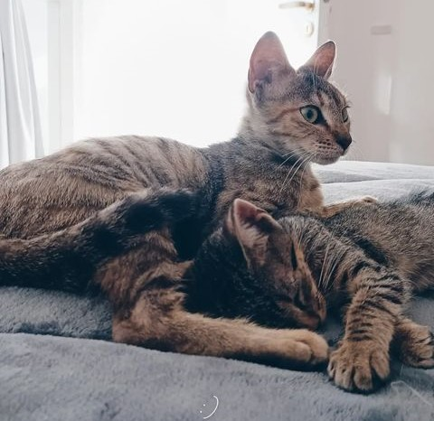

<!DOCTYPE html>
<html lang="es">
   <head>
      <meta charset="UTF-8" />
      <meta name="viewport" content="width=device-width, initial-scale=1.0" />
      <title>Mi Primer Sitio Web</title>
   </head>
   <body>
      <!-- Contenido de la página va aquí-->
   </body>
</html>

<main>
   <header>
      <section>
         <article>
      <h1>Guide for Applicants: Pet Care</h1>

      <p>¡Welcome to the babysitting vacancy for our pampered cats!

         We are delighted that you are interested in taking care of our adorable kittens. We know how 
         important it is to find someone trustworthy and loving to care for our pets when we can't be with 
         them.</p>

         <p>Please take a moment to read and complete this form carefully and sincerely. We want to make 
            sure our cats are in good hands and receive the love and attention they deserve while we are away. 
            Your information will help us ensure that we make the best possible choice for the care of our 
            furry friends.

            Thank you for considering caring for our cats! We know that, with your help, we will be able to 
            enjoy the attention and affection we need while we are away.</p>

         </header>

      <h2>Lima and Aurora</h2>

      

      <p>Lima and Aurora are two adopted cats full of love. They are affectionate, playful and get along very 
         well with humans. Their hobbies are very curious and we are going to describe them exactly to you, to 
         introduce you to our adorable felines.</p>

      </article>

         <hr/>

         <article>

         <h3>The story of Aurora's arrival</h3>

         <p>Aurora arrived first, she was 8 months old when she came home, she was adopted from the
            animal shelter after having spent a long time in transit in other homes.
            At the beginning of her arrival she was very skittish, and I couldn't pet her until three months
            had passed. After having been around, she had a hard time adapting to her new home, but finally
            she got familiar and we were able to get along better. Today Aurora is a very cuddly and playful
            kitten, and thanks to the arrival of her little sister Lima she was able to function better, be
            calmer and play more.</p>

            <h4>Description</h4>

           <p>Aurora is a loving and lonely kitten. She likes to be calm. Sometimes she can be skittish and 
            prefers to spend time in her hiding place until she gains confidence. When she is very comfortable 
            she likes to ask for pampering and for her fur to be touched gently. His favorite place to rest is 
            on his scratching post looking out the window.</p>

            <h4>Aurora's hobbies</h4>

            <ul>
               <li>Roll</li>
               <li>Run around the house</li>
               <li>Play with Lima</li>
               <li>Hunt cockroaches</li>
               <li>Throw things off the table with their little paws</li>
            </ul>

            <hr/>

         </article>

            <article>

            <h3>The story of Lima arrival</h3>

            <p>Lima came home when she was only a month old, she comes from a farm having been born with all 
               her little brothers. She was very little when she arrived home so she adapted an hour after 
               arriving, she is always ready to receive caresses and show her affection with her soft purr.</p>

               <h4>Description</h4>

               <p>Lima is a cuddly kitten who enjoys company, she is also a little naughty at times, she loves 
                  to run around the house chasing balls and investigating every corner. Despite his playful 
                  energy, he also enjoys long naps in the sun and petting behind the ears. He also likes to 
                  play with Aurora and her toys.</p>

               <h4>Lima hobbies</h4>

               <ul>
                  <li>Run all over the house</li>
                  <li>Play with Aurora</li>
                  <li>Meow to receive cuddles</li>
                  <li>Playing with human fingers under the blankets</li>
                  <li>Remove the soil from the pots</li>
               </ul>

               <hr/>

            </article>

          <footer>

         <p>Contact Form</p>
         <a href="./formularioDeContacto.html">
            Click to apply for the position</a>


          </footer>
            
      
         
            </section>

</main>